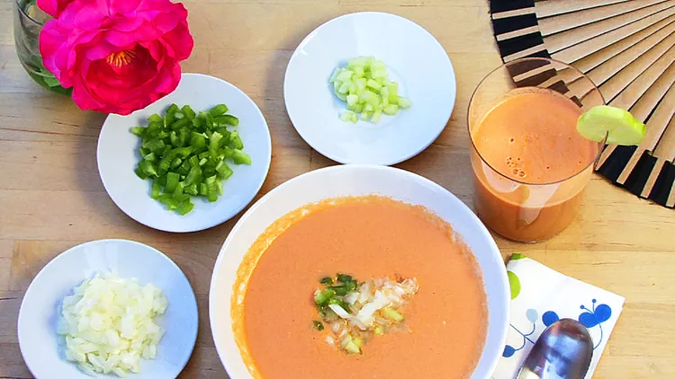

Spanish Gazpacho

Description
What's better on a hot summer's day than a classic chilled gazpacho? Serve this authentic Spanish gazpacho chilled in bowls or shot glasses for an easy, make-ahead appetizer.
Ingredients
- 2 pounds tomatoes, peeled and halved
- 1 cucumber, peeled and sliced
- 1 green bell pepper, sliced
- ½ onion, sliced
- 1 ½ tablespoons red wine vinegar
- 1 clove garlic
- salt to taste
- ¼ cup extra-virgin olive oil
- ¼ cup cold water, or as needed
Garnish
- ½ onion, chopped
- 1 green bell pepper, chopped
- 1 cucumber, chopped
Steps
- Combine tomatoes, cucumber, bell pepper, onion, vinegar, garlic, and salt in the bowl of a food processor; pulse until blended. Pour olive oil in slowly, with the processor running, until gazpacho is smooth. Add small amounts of cold water as needed to achieve desired consistency.
- Serve gazpacho chilled with chopped onion, bell pepper, and cucumber sprinkled over each serving.